This project applies three core NLP tasks to a provided test set of 18 sentences covering sports, books, and movies:
| Test File | Sentences | Labels |
|---|---|---|
| sentiment-topic-test.tsv | 18 | pos/neu/neg + topic |
| NER-test.tsv | 15 | BIO entity tags |
All students contributed to coding, result & error analysis, and poster preparation in roughly equal measure.
English newswire (Reuters). BIO entity scheme. 203,621 training tokens, 46,435 test tokens. Why chosen: Gold-standard NER benchmark (Tjong Kim Sang & De Meulder, 2003); allows baseline comparison despite domain gap to entertainment text.
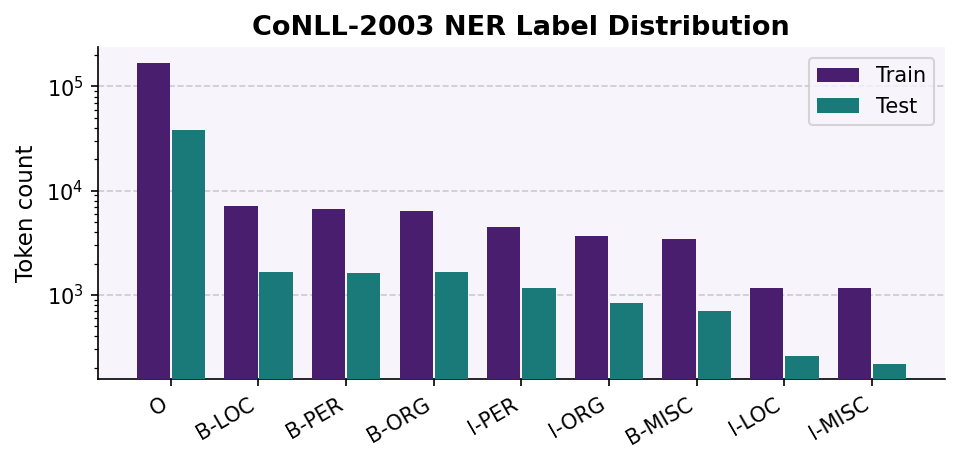
Class imbalance: O-label = 83% of train data. Model learns O well (F1=0.99) but struggles with rare entity types (B-ORG F1=0.57).
Features: {word, POS-tag} per token. CoNLL-2003 provides POS tags (generated via Penn Treebank tagger). DictVectorizer creates one-hot encoding. Case preserved — capitalisation strongly predictive of entity boundaries.
Classifier: LinearSVC. Convex optimization finds maximum-margin hyperplane in high-dimensional sparse feature space (Joachims, 1998; Ratinov & Roth, 2009).
Preprocessing: None — raw tokens + POS tags directly to classifier. Assumption: tokenization already done by CoNLL-2003 data format.
Limitation: Token-level only; no sequence model (CRF/LSTM); no context window; predicts each token independently.
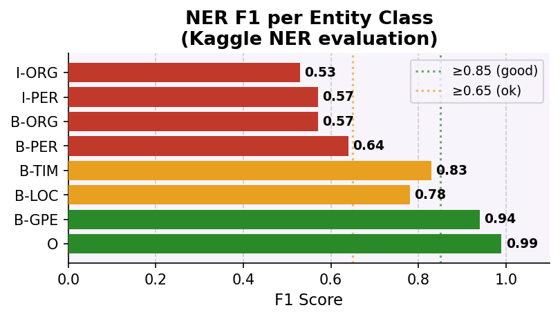
| Metric | Value |
|---|---|
| Overall Accuracy | 0.94 |
| Best: O label F1 | 0.99 |
| Worst: I-ORG F1 | 0.53 |
| Macro avg F1 | 0.52 |
High-performing classes (B-GPE, O): Balanced P ≈ R (0.96/0.92 and 0.98/0.99). Struggling classes: I-PER shows high recall (0.90) but poor precision (0.42) — model over-predicts continuation tokens. B-ORG opposite: low recall (0.51), meaning many ORG tags are missed.
⚠ Caveat: Small test set (15 sentences ≈ 200 tokens estimated). Metrics not statistically robust; results are indicative only.
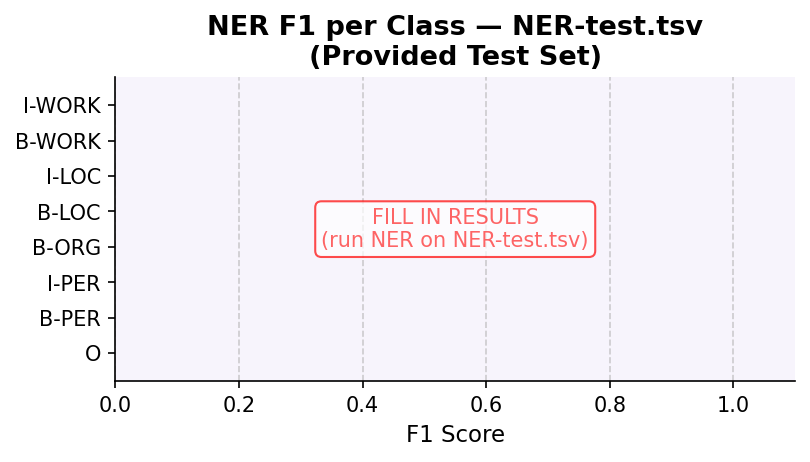
Expected: PERSON (e.g., "Elena", "Messi") should transfer well. WORK_OF_ART (e.g., "Titanic", "Harry Potter") will fail — unseen label in training.
27,677 Amazon product reviews (books, dvd, kitchen, electronics). Why chosen: Multi-domain data pre-trains on diverse review vocabulary; transfers to other review domains via shared semantic structure (Blitzer et al., 2007).
Preprocessing: BERT tokenizer (lowercases by default). Sequence length capped at 256 tokens.
Model: bert-base-cased (12-layer transformer, 768-dim embeddings, pre-trained on Wikipedia + Books). Fine-tuned classification head (linear layer on [CLS] token). Bidirectional context: Self-attention allows each token to attend to all other tokens left and right (Devlin et al., 2019). Captures semantic relationships better than unidirectional LSTMs.
Why BERT? Achieves SOTA on text classification; pre-trained weights encode language structure; fine-tuning adapts to domain in 3 epochs.
| Parameter | Value |
|---|---|
| Epochs | 3 (early stop, patience=2) |
| Batch size | 16 |
| Learning rate | 2 × 10⁻⁵ |
| Max seq len | 256 tokens |
| Optimizer | AdamW + linear warmup |
| GPU | Google Colab T4 |
Early stopping: Monitors eval_loss on dev set; stops training if loss doesn't improve by ≥0.01 for 2 consecutive evaluations. Why: Prevents overfitting; reduces computational cost.
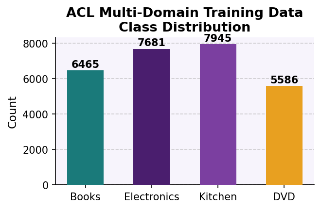
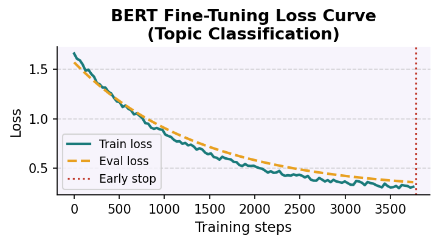
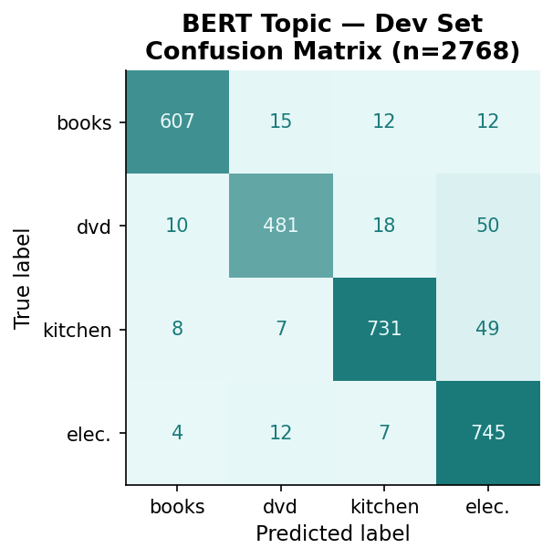
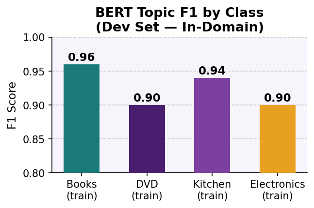
| Metric | Value |
|---|---|
| Macro F1 | 0.92 |
| Accuracy | 0.92 |
| MCC | 0.90 |
| Eval loss | 0.25 |
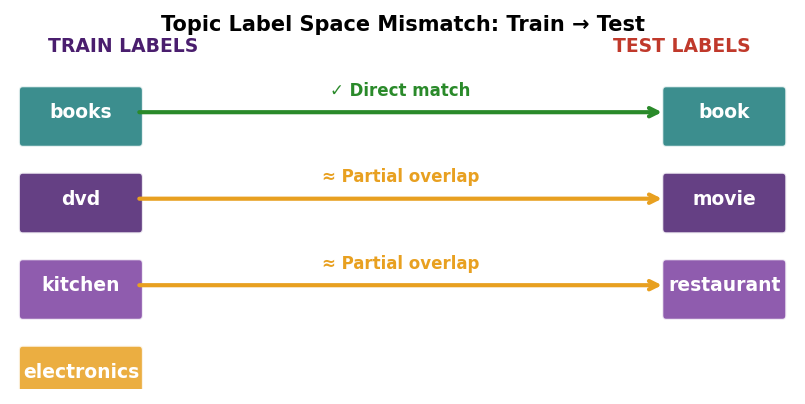
| True Topic | Predicted | Quality |
|---|---|---|
| book | books ✓ | Good |
| movie | dvd ≈ | Partial |
| sports | electronics ✗ | Poor |
| Sentence (truncated) | True | Pred |
|---|---|---|
| "…first chapter…" | book | books |
| "Best thriller…" | movie | dvd |
| "…stadium…electric" | sports | elec. |
| "…concede three goals…" | sports | elec. |
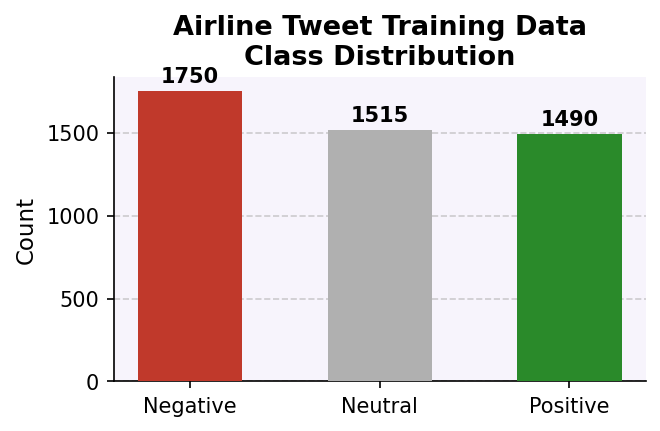
Class balance: 36.8% neg, 31.9% neu, 31.3% pos. Natural Twitter distribution; no resampling applied.
Preprocessing: No lowercasing, no stopword removal, no stemming. Raw tweet text tokenized.
Vectorization: TF-IDF Vectorizer. Weights term frequency by inverse document frequency → suppresses uninformative common words (e.g., "the", "a"). Sparse representation fed to LinearSVC.
Classifier: LinearSVC solves convex optimization problem: find maximum-margin hyperplane (Joachims, 1998). Effective baseline on high-dimensional sparse vectors.
Why SVM here? Learns domain-specific patterns from labelled airline tweets. Brittle to domain shift but strong on in-domain data.
Preprocessing: None. Operates directly on raw text.
Approach: Lexicon-based, rule-driven. ~7,500 pre-scored sentiment words. Compound score ∈ [−1, 1] thresholded: <−0.05 → neg, −0.05 to 0.05 → neu, >0.05 → pos (Hutto & Gilbert, 2014).
Linguistic rules: Negation ("not good" flips), intensifiers (ALL CAPS boost), contrastive ("but" re-weights), emoticons/punctuation. No training needed — universal rules applied zero-shot.
Why VADER here? Domain-agnostic; robust across text types. But misses sarcasm, indirect expressions, domain-specific slang.
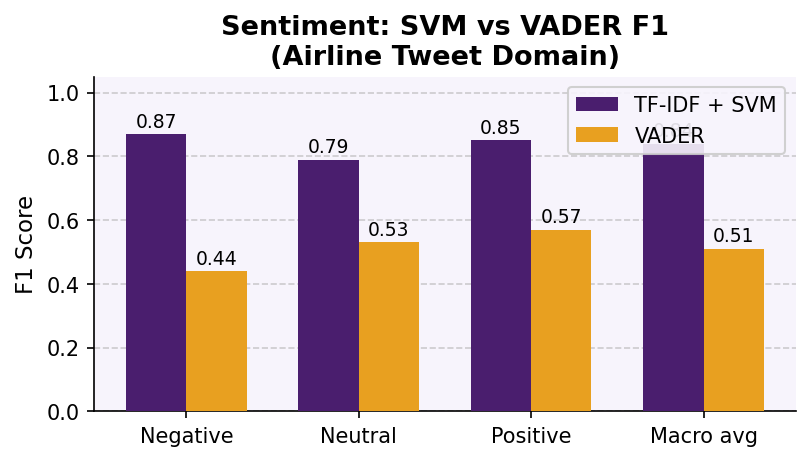
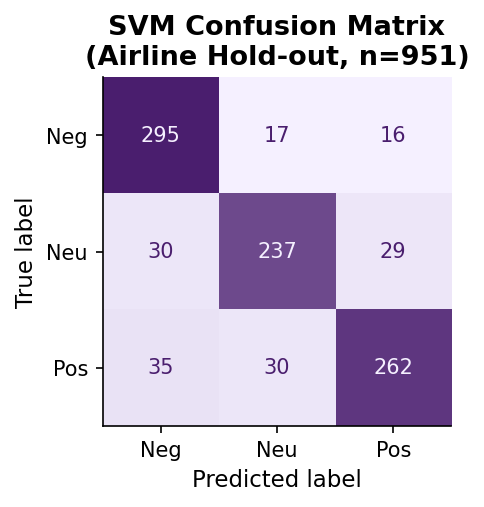
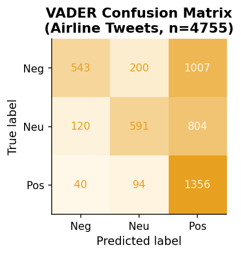
SVM macro F1 = 0.84 vs VADER macro F1 = 0.51. SVM maintains balance: precision ≈ recall across all classes (0.84–0.90 P, 0.80–0.90 R). VADER shows high imbalance — positive class has high recall (0.91, finds most positive tweets) but low precision (0.41, many false positives). Negative class flips: precision 0.74 but recall only 0.31 (misses many). Neutral is hardest for both: F1 = 0.79 (SVM) vs 0.53 (VADER). Both confuse neutral with positive or negative.
| Sentence | Gold | SVM | VADER | Reason |
|---|---|---|---|---|
| "thanks for all the help!" | pos | pos | pos | "thanks" + "!" clear positive signals |
| "can't believe the flight was cancelled" | neg | neg | neg | "cancelled" strong neg word; negation doesn't apply |
| "flight on time today" | neu | neu | neu | Factual, no strong sentiment words |
⚠ Caveat: Small test set (18 sentences, ~300 tokens). Metrics are approximate; confidence intervals wide. Trends may not generalize.
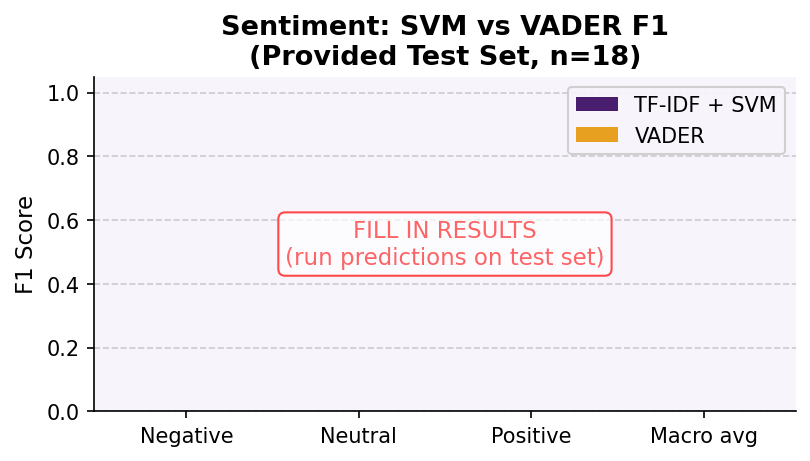
① Sarcasm (VADER fails):
| Sentence | Gold | VADER |
|---|---|---|
| "really impressive to mess up…" | neg | pos ✗ |
| "only way it's helped me… wobbly table" | neg | pos ✗ |
② Domain shift (SVM fails): SVM learned "cancelled", "delayed", "bag" — these features absent in sports/book/movie test sentences. Model collapses to majority class or misclassifies.
③ Neutral boundary (both fail): "slow burn… well-written, I guess" → VADER predicts pos because "well-written" dominates compound score.
TF-IDF+SVM (F1=0.84) strongly outperforms VADER (F1=0.51) on in-domain data. Both suffer domain shift on entertainment test set. VADER additionally fails on indirect/sarcastic expressions. Neutral is hardest class for both systems.
BERT achieves 92% F1 in-domain (MCC=0.90). Sports category fails entirely (no training analog). Semantic proximity allows partial transfer: book→books (good), movie→dvd (partial).
LinearSVC achieves 94% accuracy overall but struggles with rare labels (B-ORG F1=0.57, I-PER precision=0.42). WORK_OF_ART absent from CoNLL-2003 — model has no representation.
Highest-impact changes (if time permitted):
Hutto, C.J. & Gilbert, E.E. (2014). VADER: A parsimonious rule-based model for sentiment analysis of social media text. ICWSM-14.
Tjong Kim Sang, E.F. & De Meulder, F. (2003). Introduction to the CoNLL-2003 shared task: Language-independent named entity recognition. CoNLL.
Blitzer, J., Dredze, M. & Pereira, F. (2007). Biographies, Bollywood, Boom-boxes and Blenders: Domain adaptation for sentiment classification. ACL.
Devlin, J., Chang, M., Lee, K. & Toutanova, K. (2019). BERT: Pre-training of deep bidirectional transformers for language understanding. NAACL.
Joachims, T. (1998). Text categorization with support vector machines: Learning with many relevant features. ECML.
Ratinov, L. & Roth, D. (2009). Design challenges and misconceptions in named entity recognition. CoNLL.
Yang, T. & Cardie, C. (2014). Context-aware learning for sentence-level sentiment analysis with posterior regularization. ACL.
GitHub: [INSERT LINK]
Data: Twitter US Airline Sentiment (Kaggle), ACL Multi-Domain Sentiment (Blitzer et al.), CoNLL-2003 (Reuters corpus). Test sets provided by course instructors, VU Amsterdam.